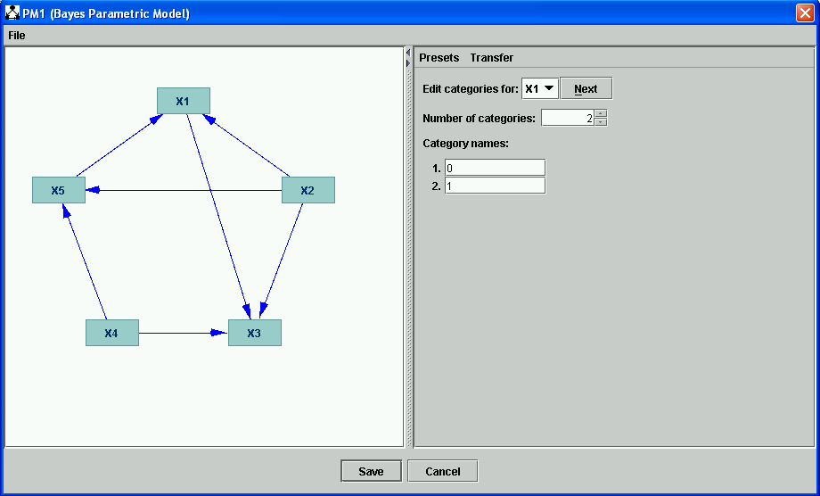
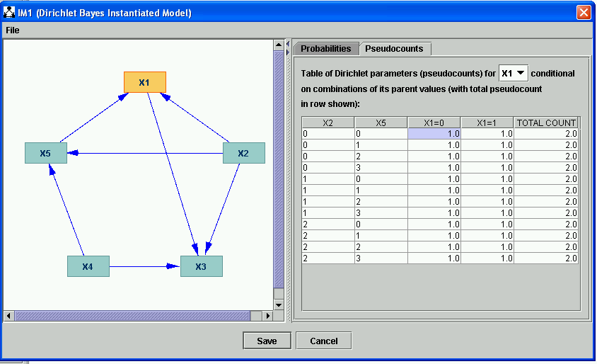
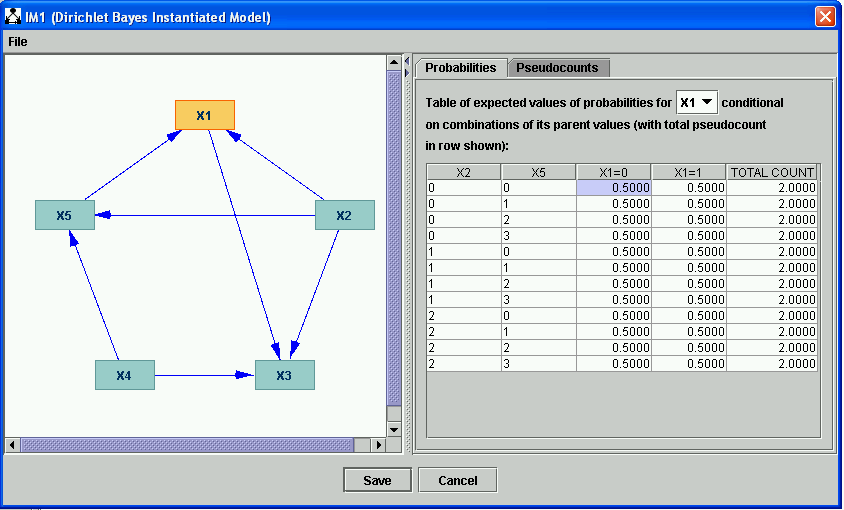

Dirichlet Bayes Instantiated Model |
A Dirichlet Bayes Instantiated Model (Bayes IM) is an alternative to a Bayes Instantiated Model that represents the distribution over each row in each conditional probability table as a Dirichlet distribution. A Dirichlet distribution the probability distribution of the parameters of a multinomial distribution. That is, it is the probability distribution of the parameters of a list of "cells" whose probabilities are (a) mutually independent and (b) sum to 1.0. Each row in a conditional probability table satisfies this criterion, so we build an alternative Bayes net representation row by row out of distributions defined in this way.
A specific Dirichlet model for a list of cells is given by specifying a Dirichlet parameter for each cell. The maximum likelihood probability for the cells is then given by the ratio of the Dirichlet parameter for that cell divided by the sum of Dirichlet parameters for all of cells in the list. In the simple case, these Dirichlet parameters will just be cell counts, considered as real numbers. We will usually, therefore, refer to Dirichlet parameters as pseudocounts. In the more general case, these pseudocounts can in fact be any positive real numbers.
A Dirichlet Bayes Instantiated Model is constructed using a Bayes Parametric Model, just like a Bayes Instantiated Model. The main differences are:
To construct a Bayes IM, first construct a DAG, then a Bayes PM, and add an IM box to the workspace, with an arrow from the Bayes PM to the IM.
Fill in the Graph box and the PM box, as explained in Bayes Parameterized Model. For instance, you might end up with a graph that looks like this (the categories for X1 are shown).

Now, double click the IM box. You get a choice of models; choose Dirichlet Bayes Instantiated Model:

What you click OK, you are offered a choice. You may either initialize the parameters of your Dirichlet Bayes net manually (i.e., fill them in one by one, by hand), or fill them in randomly.

We choose "Manually." We now get a dialog that looks like the following:

There are two tabs in the dialog that comes up next, "Probabilities" and "Pseudocounts." Let us consider "Pseudocounts" first. Pseudocounts are displayed in tables, one for each variable, with the same structure as conditional probability tables in Bayes IM's. Each pseudocount is a positive real number; in this case the are all initialized to 1.0. The sum of the pseudocounts in each row is shown in the rightmost column.
Turning now to the "Probabilities" tab, we have a table in the form of a conditional probability table that displays maximum likelihood probabilities for each cell of each Dirichlet distribution (row) in the model. These probabilities are calculated by dividing each pseudocount value in the previous display by the sum or pseudocounts in that row. In order not to lose information, the total count for each row is displayed in the "Probabiliities" tab as well. To recover pseudocounts, simply multiply the probability of a cell by the "total count" in the rightmost column.

[Note: there is some funny business going on with the right-click popup menus for doing randomization. Need to make this work.]
Old text:
If you choose a Dirichlet Instantiated Bayes Model, you will be putting an initial (or prior) Dirichlet probability distribution over the conditional probability of each value of each variable condtional on values of its parent variables:. a probability distribution over conditional probabiliy distributions. The probability distribution over the conditional probability distributions implies an "all probabilities" considered probability for each value of each variable condiitonal on its parent's values. Such Dirichlet distributions can be specified by pseudocounts, essentially a kind of fictional database. The program will automatically create a uniform and symmetric Dirichlet prior distribution for you in which all counts have the same value--you can pick the value. A Dirichlet Bayes IM may be set up manually (all values set by hand) or set up automatically as a symmetric prior in which all pseudocounts for all cells are set to a given, specified, value. Such Dirichlet distributions are called "symmetric, because the distribution function itself with such a choice of pseudocounts is symmetric with respect to variable permutation. (If all pseudocounts are set to 1.0, the distribution function is completely flat and therefore uninformative. If all pseudocounts are set to 0.5, the resulting distribution is known as a Jeffreys prior and has connections to information theory.)